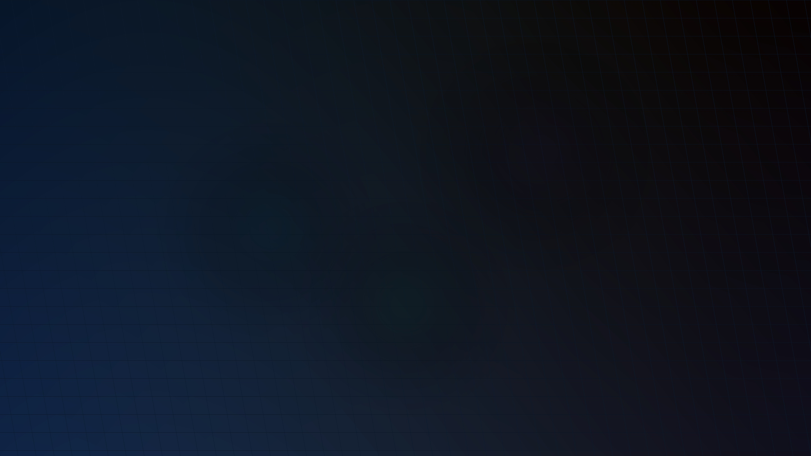
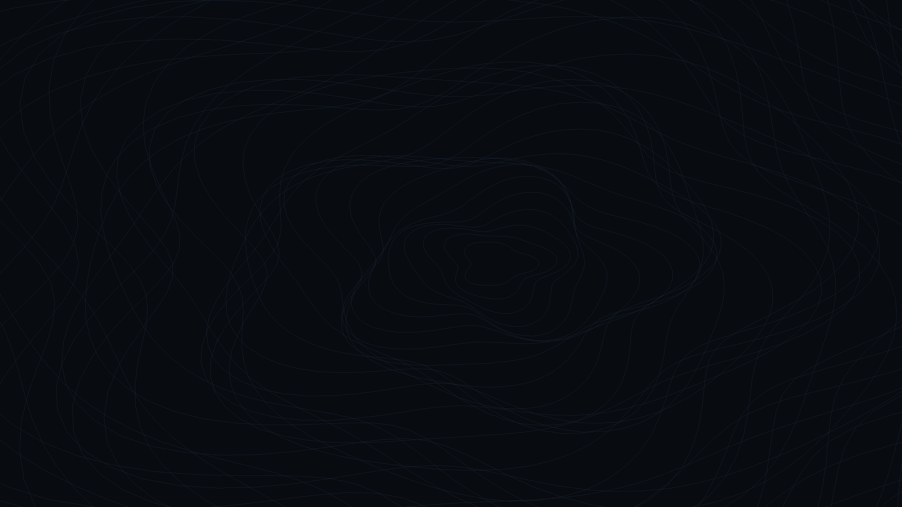

A high-refresh Linux desktop with an AI that lives natively inside it. Zero telemetry. Zero reboots. Zero freezes. Fast on an ordinary laptop, offline-first, and safe to dual-boot next to Windows.
Modern personal computing has become broken by design. Praxis was engineered to reclaim sovereignty, dignity, and raw computing performance.
Windows 11 treats your laptop as an ad terminal. Forced cloud accounts, silent telemetry pipelines, unrequested reboots mid-work, and debilitating sleep/wake freezes have ruined everyday computing. Praxis proves that an OS should boot in seconds and never freeze under memory pressure.
Corporate AI products stream your keystrokes, screen contents, and microphone audio to distant datacenters. Praxis runs LLMs and Whisper directly on your machine's GPU or CPU. Your voice, your documents, and your code remain 100% on your SSD.
No broken Bluetooth agents. No Wi-Fi dropouts. No clunky desktop papercuts. Tested in automated QEMU loops with synthetic Windows installations to ensure that dual-booting next to Windows never harms a single byte of your data.
"Your computer already knows a lot about you — your files, your notes, your work. It should act on that knowledge: answer your questions, type what you say, fix itself, and get out of your way. Without sending your life to someone else's server."
— Mehul Khanna, Creator of Praxis
Compare the engineering architecture of Windows 11 with the sovereign principles of Praxis.
| Dimension | Windows 11 | Praxis Linux (AIOS) |
|---|---|---|
| Telemetry & Tracking |
✖ Pervasive Diagnostic data, app usage, and keystroke samples uploaded continuously. |
✔ Zero Telemetry No tracking code, no background telemetry daemons, 100% private. |
| AI Architecture |
✖ Cloud Tethered Copilot & Recall capture screen history and upload queries to Azure. |
✔ Fully Local (llama.cpp) Runs models locally on your GPU/CPU. Cloud models are strictly opt-in. |
| Voice Dictation |
✖ Cloud-streamed speech Latency, requires network connection, audio analyzed externally. |
✔ Local Whisper (Super+H) Instant voice typing into any app with zero internet required. |
| Freeze & Memory Resilience |
✖ Severe Disk Thrashing Pagefile thrashing freezes cursor and locks UI under heavy workloads. |
✔ ZRAM + PSI Protection RAM-compressed swap (zstd) + kernel PSI guard halts background tasks first. |
| Dual-Boot Installation |
✖ Overwrites Bootloader Windows updates frequently wipe or demote external EFI entries. |
✔ Non-Destructive Auto-Shrink Safe NTFS shrink with byte-for-byte verification and EFI fallback backup. |
| System Updates |
✖ Mandatory Reboots Forces restart while you work; update screens can lock PC for 30+ minutes. |
✔ 1-Click Zero-Downtime Pulls fixes via Git or package manager without password nags or forced reboot. |
| Motion & Fluidity |
✖ Inconsistent UI Tech Mix of Win32, UWP, and WebViews; dropped frames during window moves. |
✔ 120Hz Spring Physics Pure Wayland compositor with sub-pixel snapping and 1:1 trackpad gestures. |
Praxis doesn't bolt a chat window onto your screen. The AI is a deep system service accessible from your keyboard, voice, and terminal.
praxis@machine:~$ ai "why is my laptop hot?"
Explore how the Wayland shell, local AI daemon, zero-freeze kernel, and hardware ACPI layer work together seamlessly.
Praxis abandons legacy X11 wrappers and slow Electron UI shells. The desktop is built natively on Hyprland's Wayland compositor paired with Quickshell's declarative QML engine. Window motions follow physical spring equations, and multi-touch gestures map 1:1 with your fingers.
Praxis doesn't bolt an isolated chat app onto your screen. The local AI runs as a system daemon (aios.service) via llama.cpp with direct CUDA, Vulkan, and CPU offloading. Push-to-talk voice dictation (Super+H) streams directly into your focused cursor via an offline Whisper pipeline.
Typical desktops freeze under heavy multitasking when the disk swap begins thrashing. Praxis solves this by pairing compressed in-RAM swap (ZRAM using high-throughput zstd) with Linux Kernel Pressure Stall Information (PSI). Heavy background indexing throttles early, guaranteeing your cursor never stutters.
From dual-backlight OLED quirks to HP Omen RTX 4060 hybrid GPU modesetting, Praxis incorporates battle-tested hardware safeguards. The automated D-Bus agent eliminates Bluetooth pairing drops, while the NVRAM guardian keeps Windows from overwriting your bootloader.
Powered by Hyprland and Quickshell, Praxis delivers buttery animations, 1:1 trackpad gestures, and intuitive window snapping.
Super+← / → snaps windows to exact halves. Super+Alt+1/2/3 splits wide screens into clean thirds with zero overlap.
Press Super+H, speak, and your words appear at your text cursor in any browser, code editor, or terminal. Processed locally via Whisper.
Temporarily unloads local AI from GPU memory, pauses live wallpapers, halts desktop blur, and gives 100% of GPU compute to your game.
Never suffer from truncated Wi-Fi scans or broken PSK joins. Live countdown timer, automatic rescan, and clean password visibility toggle.
Native BlueZ D-Bus authentication agent for mice, wireless keyboards, and headsets with automatic PipeWire audio routing.
Instantly copy text from video streams, protected web elements, screenshots, or error logs directly into your clipboard.
Test the buttery 120Hz Wayland glass shell, run offline AI diagnostics, and customize wallpapers directly online with zero installation.
You are experiencing an in-person, interactive session of Praxis Linux. All software is fully operational — drag glass windows, chat with the offline AI, browse NVMe files, and test dual-boot:
Welcome to Praxis Linux! I run 100% natively on your machine via llama.cpp CUDA offload. Keystrokes, audio, and code never leave your laptop. Click any question below or type your own to test my responses live:
Praxis automates safe NTFS partition resizing and creates an isolated Btrfs subvolume. Your Windows installation, personal files, and BitLocker keys remain 100% untouched.
Welcome to Praxis Linux AIOS (Wayland / Hyprland). Local LLM Daemon: Online (llama.cpp CUDA) • Whisper Audio: Ready Type 'help' or 'neofetch' to begin, or ask a question directly.
Click any curated wallpaper to instantly preview it on the simulated desktop:

Cyber Matrix
Contourspragma Singleton import QtQuick import Quickshell Singleton { readonly property color bg: "#0b0d12" readonly property color surface: "#12161e" readonly property color blue: "#7aa2f7" readonly property color purple: "#bb9af7" readonly property color green: "#8bd5a1" readonly property color teal: "#7dcfff" readonly property int dockWindowGap: 16 }
Twelve curated, theme-consistent dark glassmorphic wallpapers precision-tuned to Praxis Linux's Tokyo Night obsidian palette (#0b0d12, #bb9af7, #7aa2f7). Click any card to preview full-screen or test live in the simulator above.
Every shortcut read live from your active session. Grouped, searchable, and tuned for physical muscle memory.
Bootable Live ISO image for 64-bit UEFI computers. Try it directly from your USB drive with zero permanent disk modification before installing.
💡 On Windows, use Rufus in DD Mode or BalenaEtcher to write to your USB flash drive.
Clear answers to help you evaluate and install Praxis Linux safely.
Yes, absolutely. The Praxis installer features an automatic "Alongside Windows" mode that inspects your NTFS drive, tests shrinking without applying changes first, creates partition table backups, and safely allocates space. Your Windows installation and files remain 100% intact, and you can switch between Windows and Praxis at boot time.
Zero. Everything is local by design. Local LLMs run via llama.cpp directly on your CPU or GPU (CUDA / Vulkan), and voice dictation runs on an embedded Whisper model. Cloud providers (like OpenAI or Groq) are strictly opt-in and blocked by a hard architectural gate unless you explicitly provide your own API key.
Praxis was engineered on an ordinary 16 GB laptop with a 6 GB GPU (such as an RTX 4060 or 3060). However, it runs gracefully on any 64-bit x86 machine with at least 4 GB RAM. The praxis-models recommend command automatically inspects your GPU's free VRAM and suggests quantized models that run fluidly without slowing down the desktop.
Praxis pairs RAM-compressed ZRAM swap (using the fast zstd algorithm) with Linux Kernel Pressure Stall Information (PSI). If memory pressure approaches saturation, background token generation or file indexing is throttled automatically, protecting your desktop compositor and active applications from ever dropping a frame.